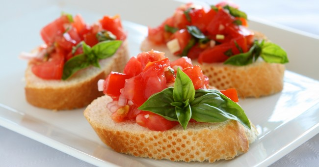

<ion-view view-title="Bruschetta aux tomates">

    <ion-content class="padding">


        <h1>Bruschetta aux tomates</h1>

        

        <p class="gras">Temps de préparation : 15 minutes</p>

        <p class="gras">Temps de cuisson : 5 minutes</p>

        <p class="gras">Ingrédients (pour 4 personnes) :</p>

        <ul>
            <li>- 8 tranches de pain</li>
            <li>- 2 gousses d'ail</li>
            <li>- 300 g de tomates cerise</li>
            <li>- 1 bouquet de basilic</li>
            <li>- Huile d'olive</li>
            <li>- Gros sel</li>
        </ul>
        <br>

        <p class="gras">Préparation de la recette :</p>

        <p>Détailler les tomates cerise en dés et hacher grossièrement le basilic.</p>

        <p>Griller les tranches de pain au grille-pain ou au four. Les frotter ensuite à l'aide de l'ail pelé.</p>

        <p>Saler et arroser d'huile d'olive.</p>

        <p>Répartir les tomates et le basilic sur le pain et déguster pendant que ce dernier est encore chaud.</p>

    </ion-content>

</ion-view>